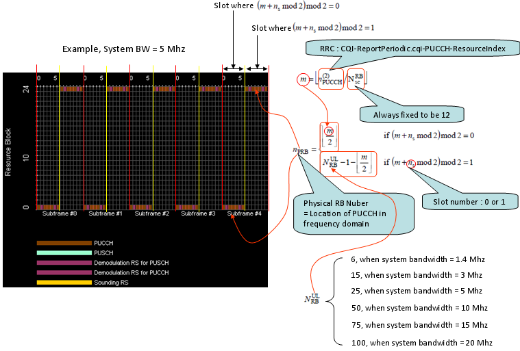
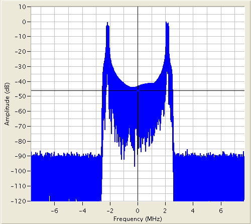

|
LTE Quick Reference Go Back To Index Home : www.sharetechnote.com |
|
|
There are many topics in LTE (especially on PHY layer) which cannot be cleary explained without going through each parameters and equations shown in the specification. Physical resource allocation is one of these topics. Physical resource allocation for PUCCH format 2, 2a, 2b is determined by the following process. Don't get panic, equation itself is all within high school math. Only our patience and persistance is required.
First get some outstanding big picture and try to figure out how the big picture is implemented by the following math process. i) PUCCH is located around the extreme end of the system bandwidth in frequency domain. ii) The location of a PUCCH alternates between the two edges when slot number changes. iii) For PUCCH format 2,2a,2b case, the only variable set by the higher layer message (SIB2) is n(2) PUCCH and all the other parameters are predefined or calculated by a predefined equation. I put the Excel spreadsheet to calculate the location here. (I haven't extensively tested my calculation. Let me know if you find any problem).

If you see a UL frame carrying a PUCCH (single PUCCH), it would look as follows.

|